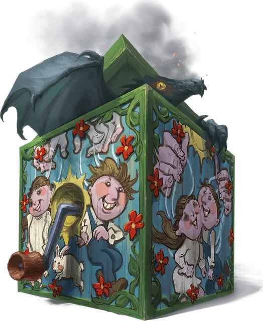

Куб вызова
Cube of Summoning
Чудесный предмет, редкий

Рекомендованная стоимость 4 000 ЗМ
Этот Крошечный куб выглядит как игрушка «чёртик в табакерке». Когда действием Магия вы крутите его ручку, звучит весёлая мелодия, его крышка открывается, в ближайшем незанятом пространстве появляется существо, и крышка снова закрывается. Иным способом открыть крышку нельзя.
Броском по следующей таблице определите, какое заклинание куб сотворяет, чтобы призвать существо. Заклинание сотворяется на 5-м уровне (Сл спасброска 17, модификатор атаки заклинания +9) и не требует Концентрации, но в остальных отношениях считается, что заклинание сотворили вы.
Как только куб призывает существо, он не может сделать это снова до следующего рассвета.